📑 来源信息
原始链接
原文链接不可用（微信反爬拦截）
抓取方式
Playwright Headless + mmbiz图片直链提取
文章ID
ARC-20260423-006
归档状态
✓ 全文16页已保存（原文链接已失效，本地存档可完整查阅）
本地图片
16页 + 1张截图
原文格式
图片全文（文章以图片嵌入微信）
📝 内容摘要
核心内容摘要
课题名称
土木工程学术论文图形摘要（Graphical Abstract）设计赏析与规范化研究研究背景与痛点
学术论文数量激增，图形摘要（Graphical Abstract）成为快速传达研究核心内容的"第一视觉门面"。好的图形摘要能让审稿人和读者在30秒内理解研究全貌，但当前大量土木工程论文的图形摘要存在： - 信息过载：试图在一张图里塞入所有技术细节 - 逻辑混乱：流程图箭头关系不清晰，缺乏主次之分 - 视觉粗糙：配色杂乱、排版随意，缺乏专业美感 - 缺乏创新：大量重复使用相同模板，无学科特色解决方案：图形摘要设计范式与期刊案例分析
本合集（第二十四期）精选土木工程领域高水平期刊图形摘要，提炼五类设计范式：| 类型 | 设计要点 | 适用场景 |
|---|---|---|
| 流程型 | 横向箭头串联各研究阶段 | 方法论论文、展示实验流程 |
| 对比型 | 左右/上下对照突出创新 | 参数分析、方案比选 |
| 结构型 | 层级递进展示系统组成 | 框架设计、模型构建 |
| 机理型 | 示意图表达物理机制 | 力学分析、本构模型 |
| 数据型 | 图表结合，数字说话 | 试验研究、监测数据 |
涵盖结构工程、材料力学、地质工程等多个子方向SCI期刊案例，配色讲究专业感与学科特色。
科学与工程价值
- 学术传播：图形摘要是提升论文引用率的"隐形推手"，直接影响研究影响力 - 学科形象：反映土木工程从"传统经验"向"数字可视化"的现代化转型 - 教学参考：优秀案例可作为研究生论文写作课的直观教材📝 内容摘要
课题名称
数字孪生信道赋能低空智联网高可靠通信
研究背景与痛点
低空经济已成为国家战略性新兴产业，无人机物流、城市空中交通、低空智慧巡检等新业态快速落地。低空智联网（LAIN）作为支撑这些应用安全高效运行的核心基础设施，是6G通信技术面向空天地一体化演进的关键方向。
核心痛点：
- 低空场景节点高动态
- 拓扑三维化
- 信道建模不准
- 网络状态难预测
解决方案：DTCLAIN框架
提出"多模态感知—环境信道映射—KPI预测—闭环优化"的全链条解决方案：
| 创新点 | 核心内容 |
|---|---|
| 创新一 | 首次提出以数字孪生信道为核心的DTCLAIN框架，融合通感一体化、三维地理信息与无人机状态数据，实现低空环境高保真重构 |
| 创新二 | 构建无线环境知识（WEK）与信道大模型协同机制，实现可解释的环境信道智能映射，提升建模精度与泛化能力 |
| 创新三 | 引入迁移学习实现跨高度空域KPI精准预测，搭配时空推演与双向交互机制，支撑网络自主优化与可靠通信 |
科学与工程价值
- 理论层面：完善6G数字孪生信道与低空通信理论体系
- 应用层面：为无人机物流、城市空中交通等低空经济场景提供关键技术支撑
- 工程价值：对通信网络规划与智能优化具有重要参考意义
📄 原文全文（16页高清存档）
共16页 · 点击放大查看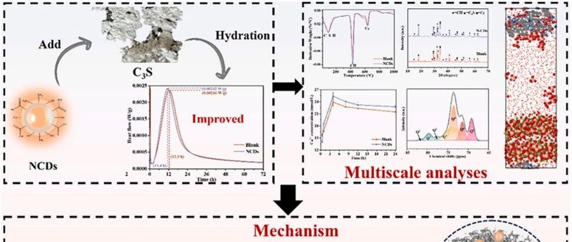
1第1页
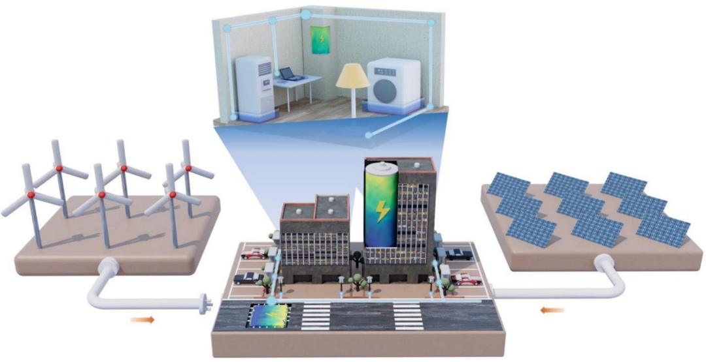
3第3页
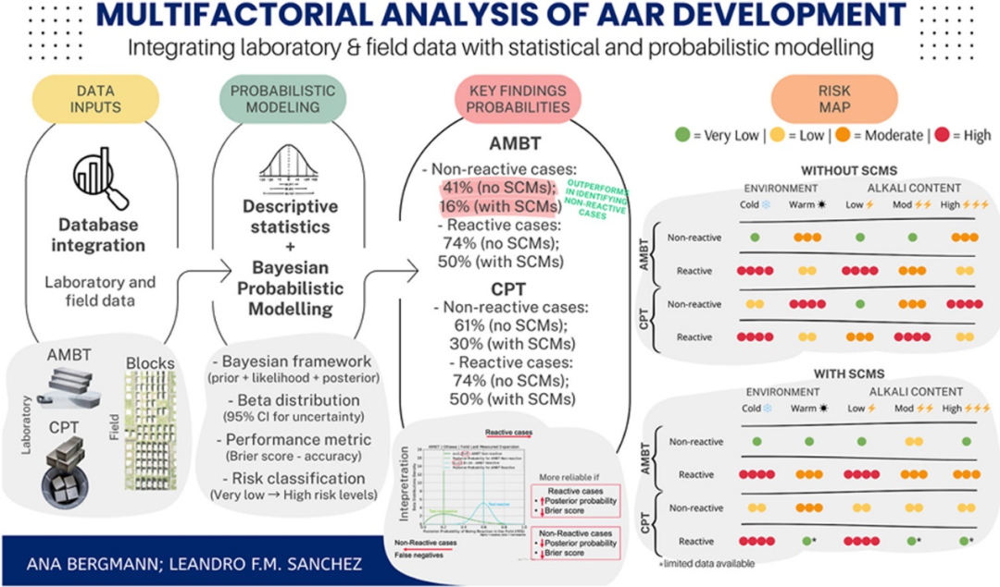
4第4页
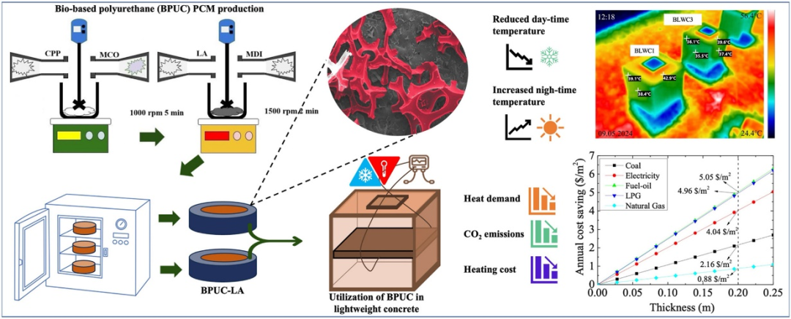
5第5页
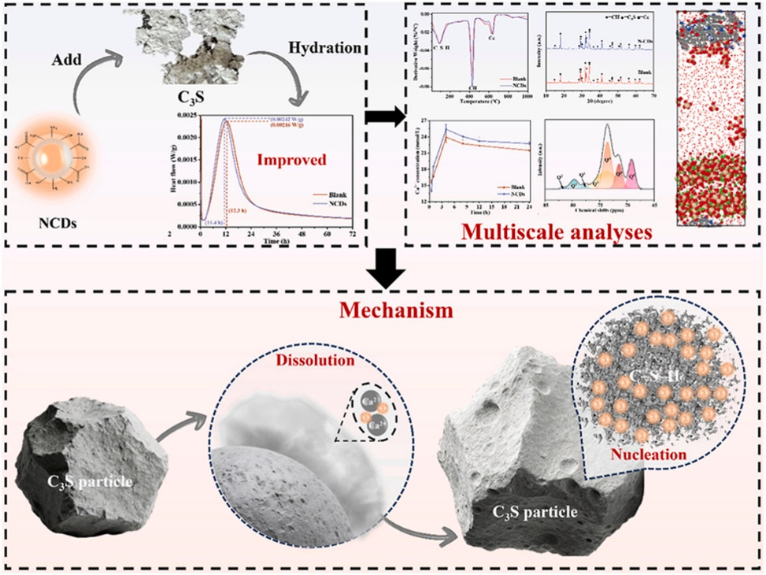
6第6页
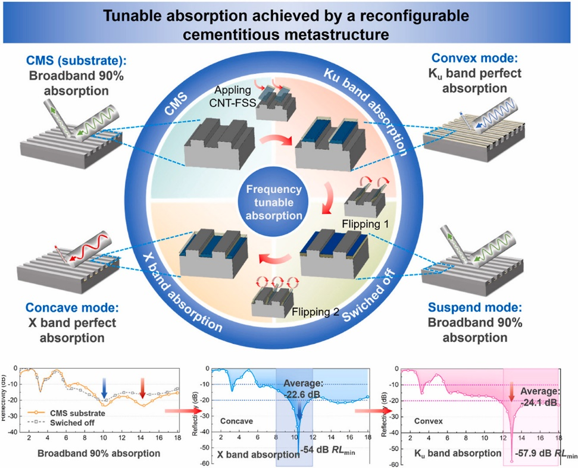
7第7页
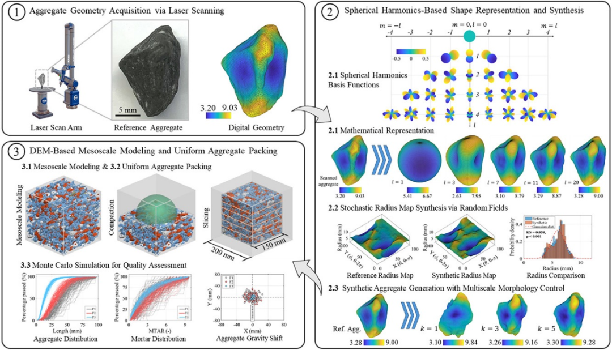
8第8页
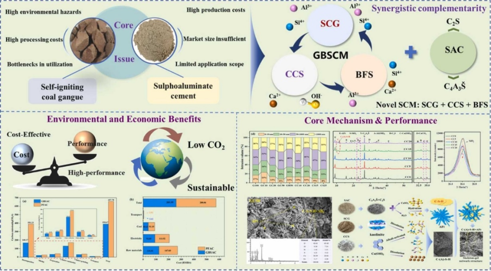
9第9页
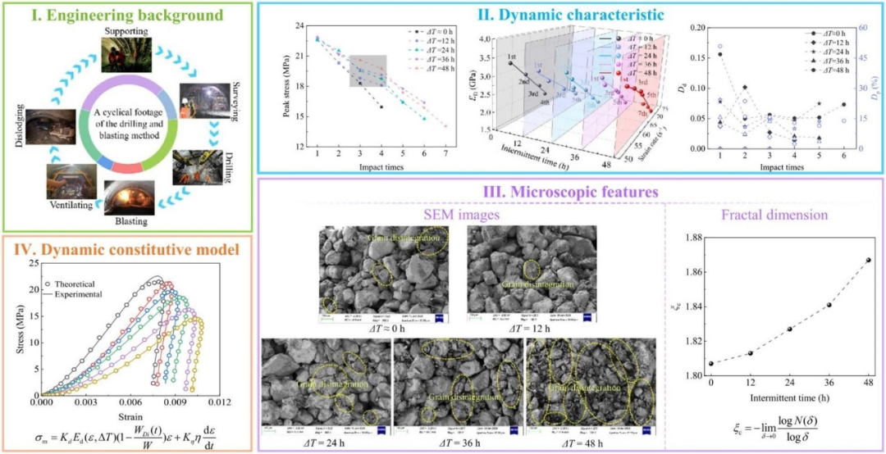
10第10页
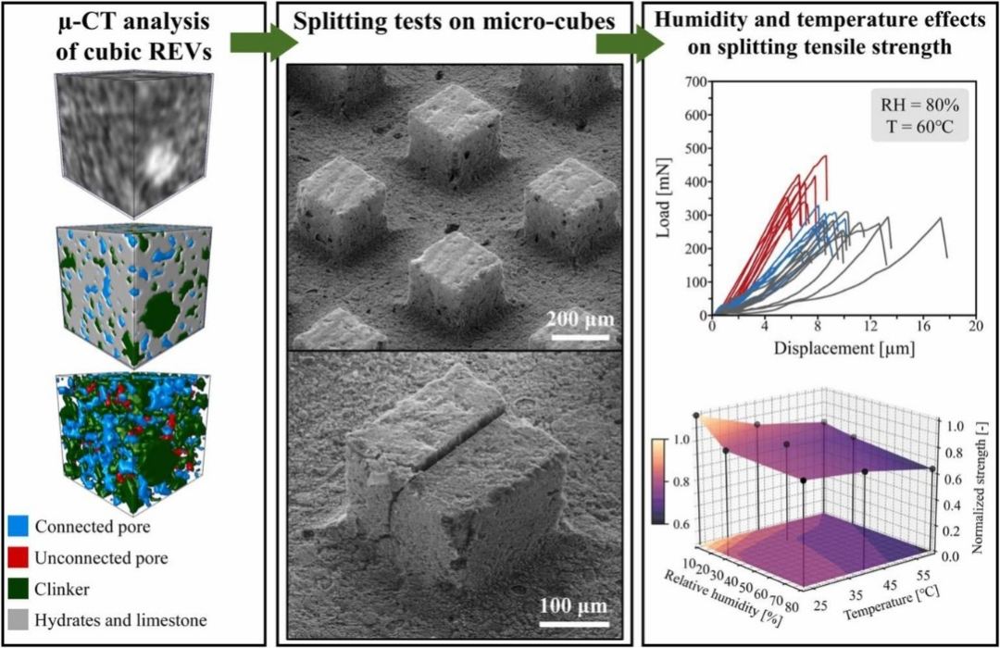
11第11页
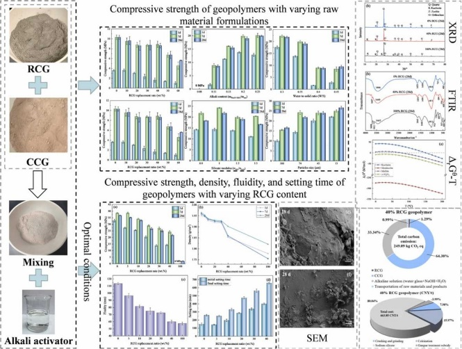
12第12页
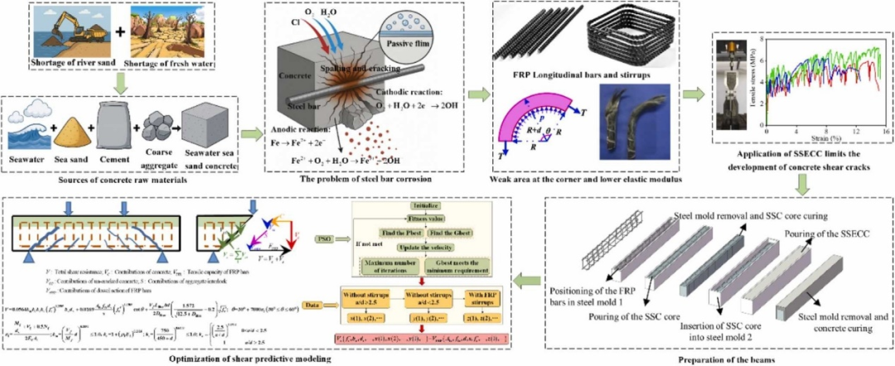
13第13页
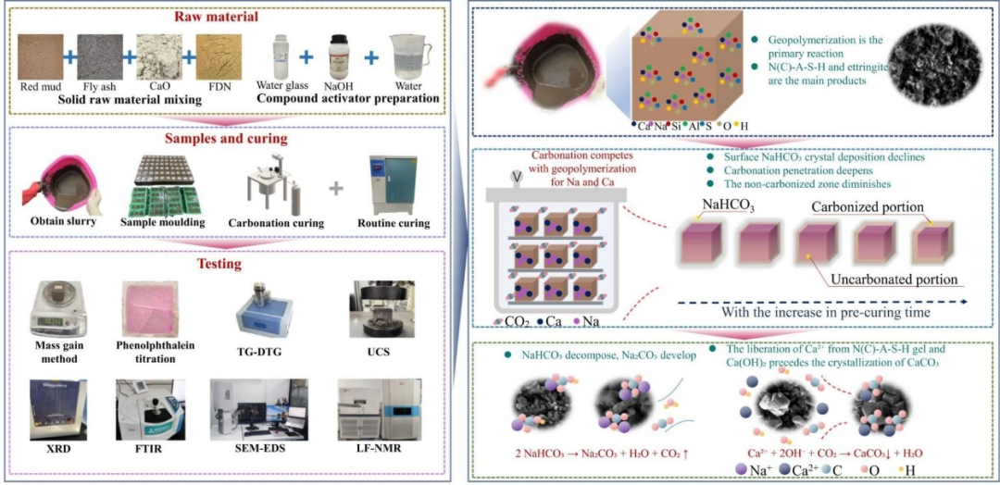
14第14页
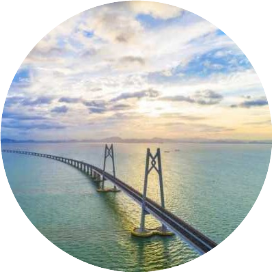
15第15页
🖼 微信文章原始截图
完整保留原始页面，包括公众号信息、发布时间、阅读量等元数据